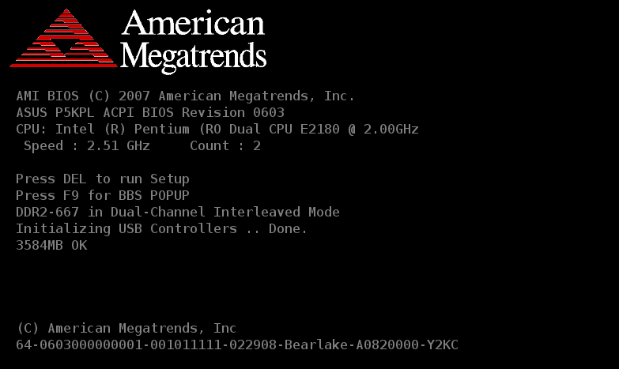
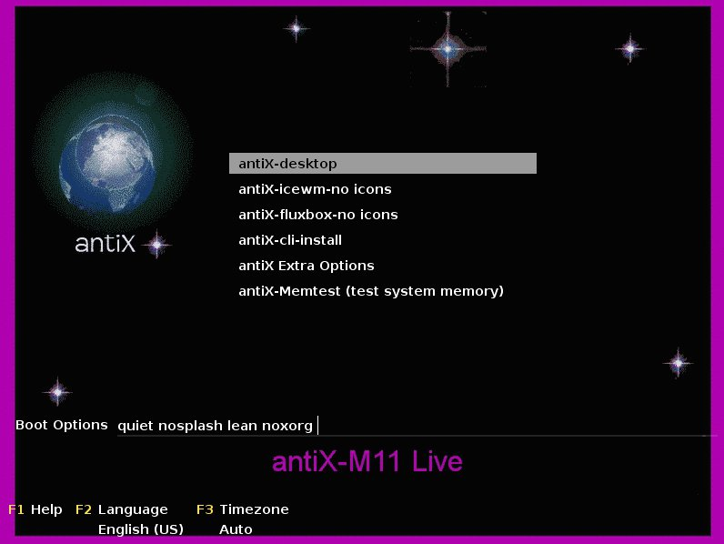

A Beginner’s Guide to Booting antiX
This is an easy step-by-step guide to booting antiX Live Media (LiveCD, LiveUSB, etc). It was inspired by rokytnji’s many step-by-step guides on the antiX forums.
Step 0: Booting the computer

Sometimes it goes by so fast you might want to take a picture of it because it contains a couple of pieces of vital information. In the image above it says "Press DEL to run Setup" and it also says "Press F9 for BBS POPUP". This means you can access the BIOS set up with the <delete> key and you can get to the boot option menu with the <F9> key. These keys are different on different computer systems (*** sigh ***).
If you are very lucky, your computer might already be setup to boot from the CD Drive first, or even boot from a USB stick first. If not then you will either need to go into the BIOS Setup and adjust the boot order (to change things permanently) or invoke the boot option menu to change the boot order for just this one time. You should be able to figure out which entry is for the CDROM and which one is for the USB stick. Very old computers can not boot from USB so the USB stick won’t show up as one of the options.
When you succeed in booting the Live Media you will see a (hopefully) brief text message flash by and then you will end up with the boot loader menu.
Step 1: The Boot Loader menu
If you run into difficulties boot, this menu will be your starting point, your base camp for assaulting the peak of Mount antiX.

You might see a clock symbol at the end of the highlighted line. Whether you do or not, I suggest you hit the <down-arrow> key followed by the <up-arrow> key. This will disable auto-start and give you time to think. Once you hit a key (most keys anyway) the timer has been deactivated and you don’t have to worry about being suddenly whisked away to the next step.
You use the <up> and <down> arrow keys to move between preselect groups of options. You should see the text in the "Boot Options" line near the bottom of the screen change. It shows you the preset options. You can add other options just by typing them in or you can use the <left> and <right> arrow keys to edit one or more of the preset options. The Option Index page lists all the common options alphabetically in case you want to find out what a particular option does.
If you have trouble booting, the primary tool you will use to fix things is to type in options at the Boot Loader menu. Once you have the options like you want them hit <enter> to continue the boot process.
|
|
If you get to this stage but are having trouble booting, you can adjust the size of the text that will be displayed in the next step with the vga option. This can be extremely helpful. |
Step 2: the linuxrc bootstrap
This next step involves the bootstrap script. It reports what it is doing in text mode. Often, this is where the problems occur.
Welcome to antiX-M11 Jayaben Desai! Total Memory 991 M Free Memory 963 M Linux kernel: 2.6.36-1-mepis-smp CPU: AMD Athlon(tm) 64 X2 Dual Core Processor 3600+ Scanning devices for: antiX/squashfs Mounted /dev/sr0 at /boot-dev The linuxrc bootstrap is done. ======================================================================